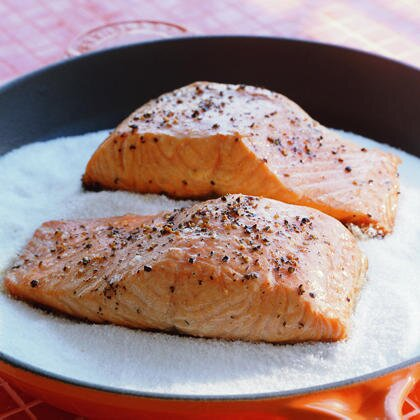

Cole's Salmon

Yummy Cooked Salmon!
This recipe will be quick and super easy! I love this healthy and fresh salmon, and it's absolutely perfect once a week or every two weeks.
Ingredients
- 6-8 Ounces of Fresh Caught Wild Salmon
- Salt
- Pepper
- 1/2 Lemon
How to Cook
- Turn on Your grill to a medium-high heat (400-425 Fahrenheit)
- While the grill heats up, place the salmon on a large bed of aluminum foil
- Generously season the top with salt and pepper
- Flip the salmon and generously season the bottom
- Flip the salmon again and season the top once more to your liking
- Cut the lemon and squeeze the juice generously on top of the salmon
- Wrap the salmon in a tent of aluminum foil (make sure it is sealed!)
- Place the salmon the grill for 12-15 minutes
- Remove the salmon and enjoy!
This was only a step by step guide on how to prepare the salmon. You can choose whatever you want to go along with it as a side dish!
My personal favorite side dishes with this are brown rice and cooked asparagus :)